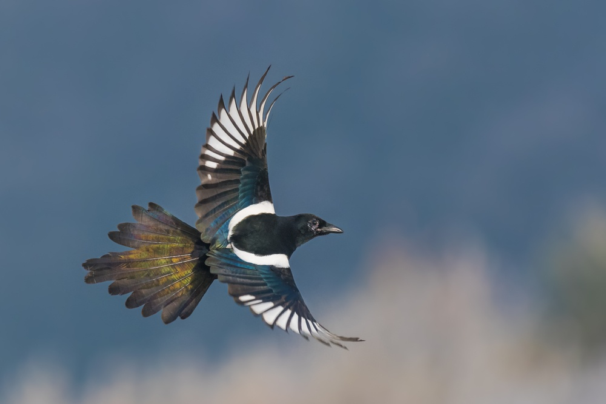
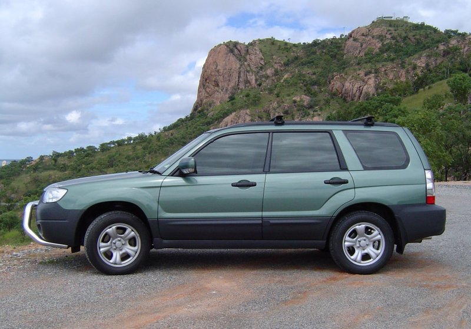
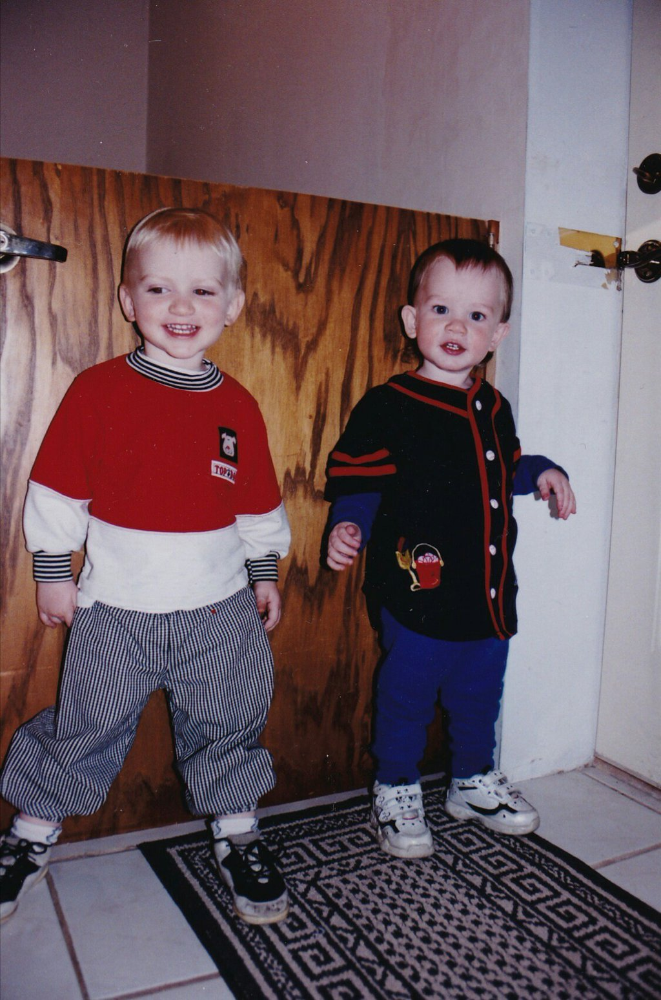
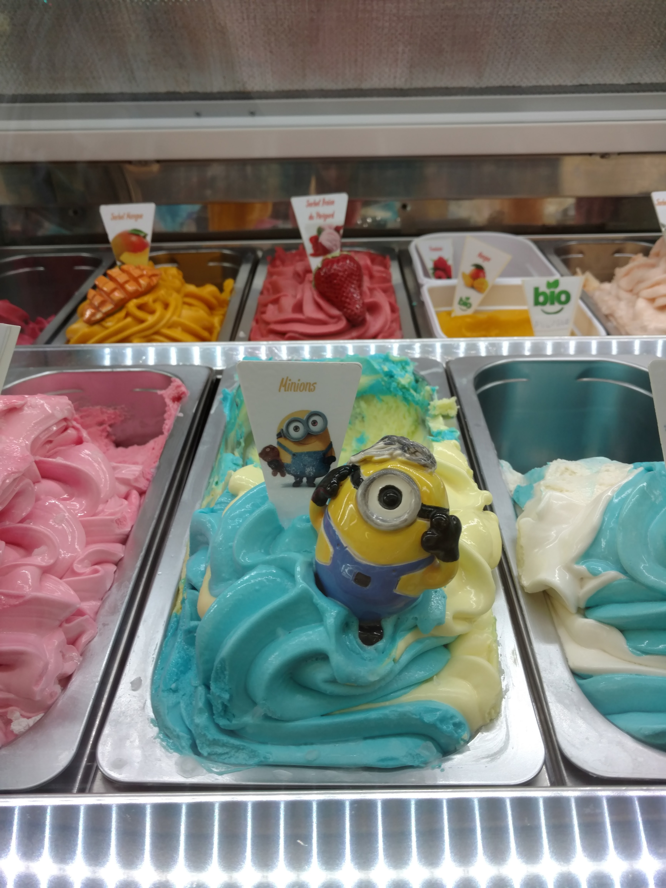
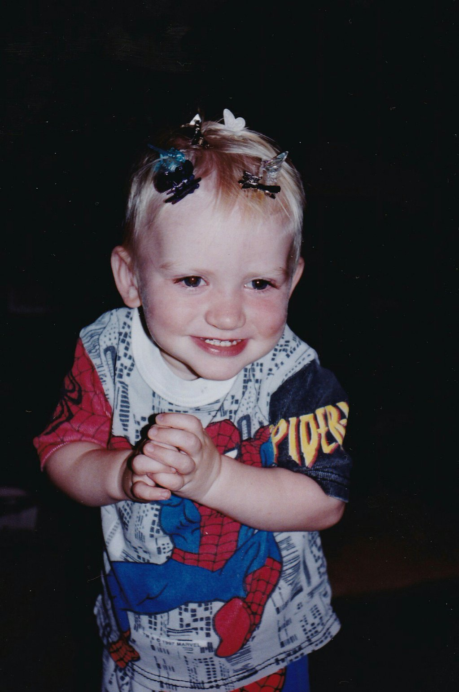
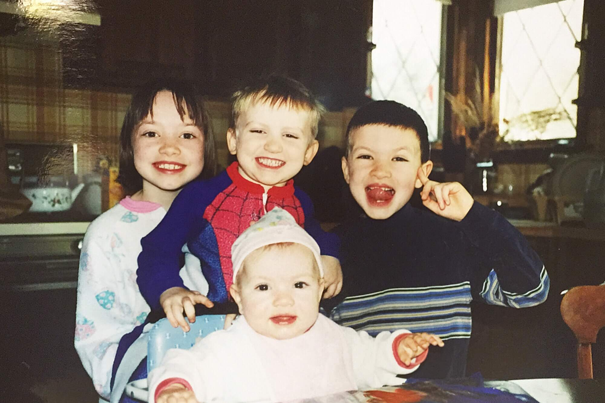

24 august 2021
25 august 2021
26 august 2021
27 august 2021
Here's a poem
Mixed-up Moon by Anthony Madrid
Mixed-up moon. Prop open the book.
Now and forever, you nip it in the bud.
I allow the heart does not make the blood,
Nor the human being the book.
Mixed-up moon. I don’t have to look.
Que no quiero ver that talked-up perfection.
It’s no use trying to rub out your reflection
From a piece of polished brass.
Mixed-up moon. I’ll take that as a yes.
I’ll take it outside, out of ’shot of the mourners.
I think you’ll agree it’s time we cut corners. We’ll cut
So many corners, the thing becomes a sphere.
Mixed-up moon. Insincere, insincere.
Thomas à Kempis and Francis Xavier.
The Better Book says that good behavior
Is the privilege, not the duty, of the good.
Mixed-up moon. Don’t misunderstood.
You close the circuit, find out what it’s worth.
Redwood roots running deep in the earth:
They only go down six feet.
Mixed-up moon. Pilgrimage sweet.
All with me’s meete that I fashion fit.
We wake and forget the dream we were having:
Same thing happens to childhood.
Mixed-up moon. Already reviled it.
Bird in the egg and a tale to embroider.
Any ten words in any order,
The result will be the same.
Mixed-up moon. Verstehn Sie ihn?
Ich—hüte mich, ihn zu verstehn.
About these kids making out on the train,
I say: Deja ir a mi pueblo.
Mixed-up moon. Count Dracula Twemlow.
Twelve disciples and a canine nuisance.
My rabbi says that whoever chooses
Belief is not a believer.
Mixed-up moon. Rock-’em Occam’s cleaver.
First publication in form of a fascicle.
Children! they don’t even know it’s possible:
Having friends you don’t like.
Mixed-up moon. Riker’s Island bike.
Raking the grass and raking the weed.
A plane’s shadow on building and street:
It doesn’t travel the speed of the plane.
Mixed-up moon. Semper the same.
Temperament, temperament, given to worry.
Their fault is they can’t even tell a story
Unless they understand it.
Mixed-up moon. Give Petunia a minute.
He’s gone over to Jesus, molted a feather.
Any ten shapes, taken together,
Are a jigsaw of the degenerate body.
Mixed-up moon. Gastrocnemius.
Hard for these geniuses, easy for children.
Most of what passes for bravery is only
Want of imagination.
Mixed-up moon. Insert pagination.
Bird in the egg, picking its fur.
You want to know what’s in it for her?
Your good looks and diction/syntax.
Mixed-up moon. Everybody wins.
¡Aléjate de mí, Satanás! unless
Any lit match will pass for a compass:
The flame points up, because hell is above us.
Mixed-up moon. Hell is above. 29 April 2014:
I have memorized the Hindu poem that says
This hunk of quartz must someday flex
Its back and run up a tree.
Here's a picture
This is a Eurasian Magpie, native to the Netherlands.
back to top
Here's a poem
Lullaby by WH Auden Lay your sleeping head, my love, Human on my faithless arm; Time and fevers burn away Individual beauty from Thoughtful children, and the grave Proves the child ephemeral: But in my arms till break of day Let the living creature lie, Mortal, guilty, but to me The entirely beautiful. Soul and body have no bounds: To lovers as they lie upon Her tolerant enchanted slope In their ordinary swoon, Grave the vision Venus sends Of supernatural sympathy, Universal love and hope; While an abstract insight wakes Among the glaciers and the rocks The hermit's carnal ecstasy. Certainty, fidelity On the stroke of midnight pass Like vibrations of a bell, And fashionable madmen raise Their pedantic boring cry: Every farthing of the cost, All the dreaded cards foretell, Shall be paid, but from this night Not a whisper, not a thought, Not a kiss nor look be lost. Beauty, midnight, vision dies: Let the winds of dawn that blow Softly round your dreaming head Such a day of welcome show Eye and knocking heart may bless, Find the mortal world enough; Noons of dryness find you fed By the involuntary powers, Nights of insult let you pass Watched by every human love.
Here's a picture
This is basically what Lil Gob looks like.
back to top
Here's a poem
Thanks by WS Merwin
Listen
with the night falling we are saying thank you
we are stopping on the bridges to bow from the railings
we are running out of the glass rooms
with our mouths full of food to look at the sky
and say thank you
we are standing by the water thanking it
standing by the windows looking out
in our directions
back from a series of hospitals back from a mugging
after funerals we are saying thank you
after the news of the dead
whether or not we knew them we are saying thank you
over telephones we are saying thank you
in doorways and in the backs of cars and in elevators
remembering wars and the police at the door
and the beatings on stairs we are saying thank you
in the banks we are saying thank you
in the faces of the officials and the rich
and of all who will never change
we go on saying thank you thank you
with the animals dying around us
taking our feelings we are saying thank you
with the forests falling faster than the minutes
of our lives we are saying thank you
with the words going out like cells of a brain
with the cities growing over us
we are saying thank you faster and faster
with nobody listening we are saying thank you
thank you we are saying and waving
dark though it is
Here's a picture
I will never have fashion this good again.
back to top
Here's a poem
From "A Season in Hell" by Arthur Rimbaud It is recovered! What? Eternity. It is the sea Mixed with the sun. My soul eternal, Redeem your promise, In spite of the night alone And the day on fire. Of human suffrage, Of common aspirings, You free yourself then! You fly according to... Hope never more, No orietur. Science and patience, Retribution is sure. No more tomorrows, Embers of satin, Your ardor is now Your duty only. It is recovered! What? Eternity. It is the sea Mixed with the sun.
Or, in French:
Elle est retrouvée. Quoi? - L'Éternité. C'est la mer allée Avec le soleil. Âme sentinelle, Murmurons l'aveu De la nuit si nulle Et du jour en feu. Des humains suffrages, Des communs élans Là tu te dégages Et voles selon. Puisque de vous seules, Braises de satin, Le Devoir s'exhale Sans qu'on dise : enfin. Là pas d'espérance, Nul orietur. Science avec patience, Le supplice est sûr. Elle est retrouvée. Quoi ? - L'Éternité. C'est la mer allée Avec le soleil.
Here's a picture
Believe it or not, this is somehow the only photo I took while in Paris for a week.
back to top
Here's a poem?
I went home to see my parents today. We set up a projector in the backyard and listened to music. This is an OK Nick Cave song, not compositionally the most interesting, but I quoted it in my Master's thesis. Anyways, a link and the lyrics.
I am beside you I am beside you I am beside you I am beside you Look for me Look for me I am beside you Look for me I try to forget To remember That nothing is something Where something is meant to be I am beside you I am beside you Look for me Look for me Well, I think they’ve gathered here for me I am within you You are within me I am beside you You are beside me I think they’re singing to be free I think they’re singing to be free I think my friends have gathered here for me I think they’ve gathered here To be beside me Look for me Look for me I am beside you You are beside me You are beside me Look for me
Here's some pictures
I promise these are the last baby photos, which you've probably already seen, but they are Spiderman in nature.
 back to top